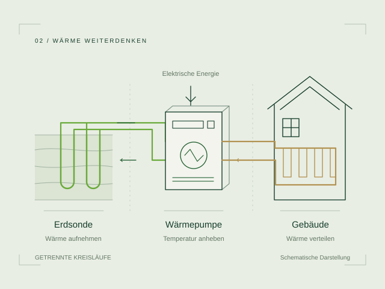

Erdsonde & Wärmepumpe
WÄRME FÜR IHR GEBÄUDE
Bodenwärme nutzen.
Behaglich wohnen.
Eine Sole-Wasser-Wärmepumpe macht die Energie aus der Erdsonde für Heizung und Warmwasser nutzbar. Sie ist eine Alternative zur fossilen Wärmeerzeugung. Entscheidend ist das Zusammenspiel von Wärmequelle, Wärmepumpe und Wärmeverteilung. Leitungsführung und Anschlusspunkte werden mit der Gebäudetechnik abgestimmt.

GUT ZU WISSEN
Ein Überblick.
So funktioniert es
Die Erdsonde bringt Wärme aus dem Untergrund zur Wärmepumpe. Ein elektrisch angetriebener Verdichter erhöht das Temperaturniveau. Anschliessend wird die Energie an das Heizsystem abgegeben.
Das sind die Vorteile
Der Untergrund bietet eine ganzjährig verfügbare Wärmequelle. Eine passende Auslegung und niedrige Vorlauftemperaturen unterstützen den effizienten Betrieb. Bei entsprechendem Anlagenkonzept kann im Sommer auch Geocooling möglich sein.
Zu den Kosten
Der Aufwand hängt von Gebäude, Bohrumfang und örtlichen Verhältnissen ab. Für eine vergleichbare Offerte werden Bohrung, Anbindung und Gebäudetechnik klar beschrieben. Der vereinbarte Leistungsumfang sowie Strombedarf und Betrieb gehören zur Gesamtbetrachtung.